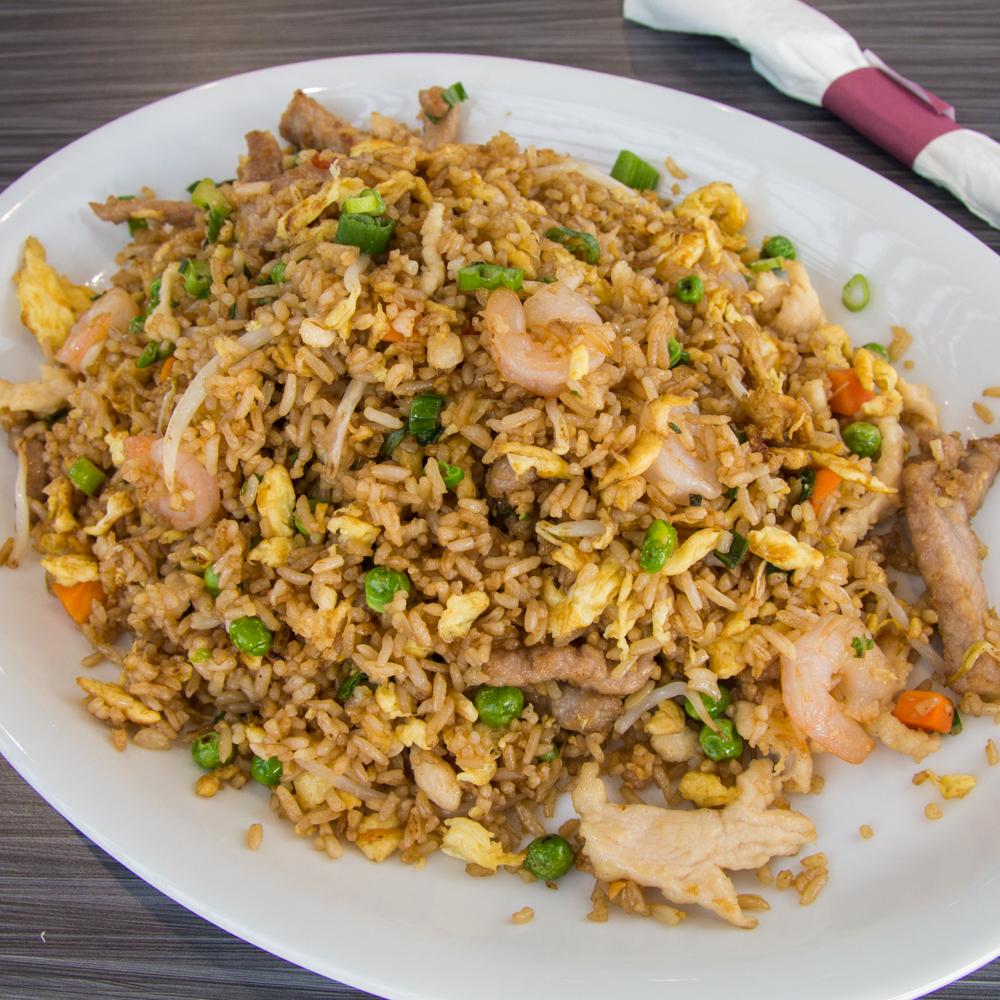

Recipes Website

Ingredients needed:
- Cooked rice (preferably cooled)
- Protein (such as cooked chicken, shrimp, pork, or tofu)
- Vegetables (such as diced carrots, peas, bell peppers, and onions)
- Eggs
- Soy sauce
- Garlic
- Ginger (optional)
- Green onions (optional)
Directions:
- Prepare Ingredients: Chop vegetables, dice protein, and mince garlic. Beat eggs in a bowl.
- Heat Oil: Heat oil in a large skillet or wok over medium-high heat.
- Cook Protein: Add protein to the skillet and cook until browned and cooked through. Remove from skillet and set aside.
- Cook Vegetables: Add chopped vegetables to the skillet and cook until tender-crisp, stirring occasionally.
- Add Aromatics: Push vegetables to the side of the skillet and add minced garlic (and ginger if using) to the center. Cook until fragrant.
- Scramble Eggs: Push vegetables and aromatics to the side of the skillet and pour beaten eggs into the center. Scramble until fully cooked.
- Add Rice: Add cooked rice to the skillet and stir to combine with vegetables, protein, and eggs.
- Season: Pour soy sauce over the rice and stir well to evenly distribute the sauce.
- Finish: Cook for a few more minutes until everything is heated through and well combined.
- Serve: Garnish with chopped green onions if desired, then serve hot. Enjoy your delicious fried rice.